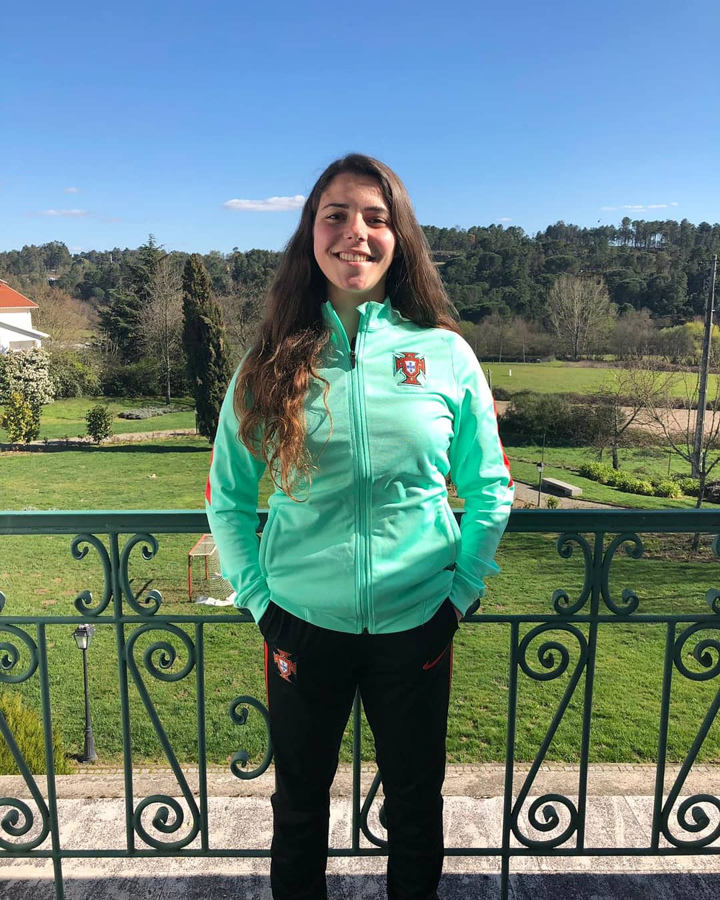
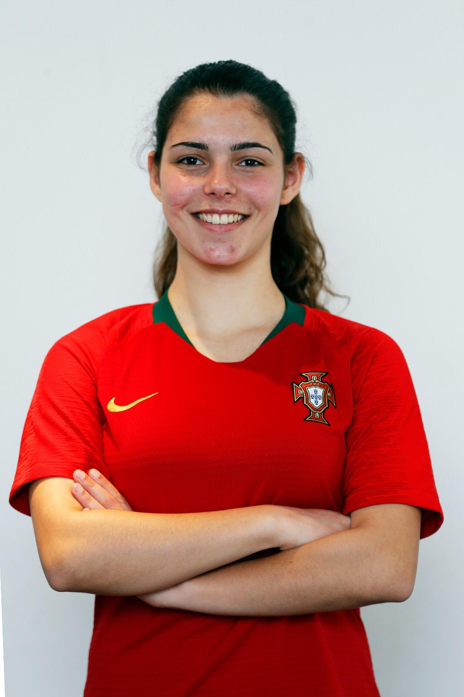
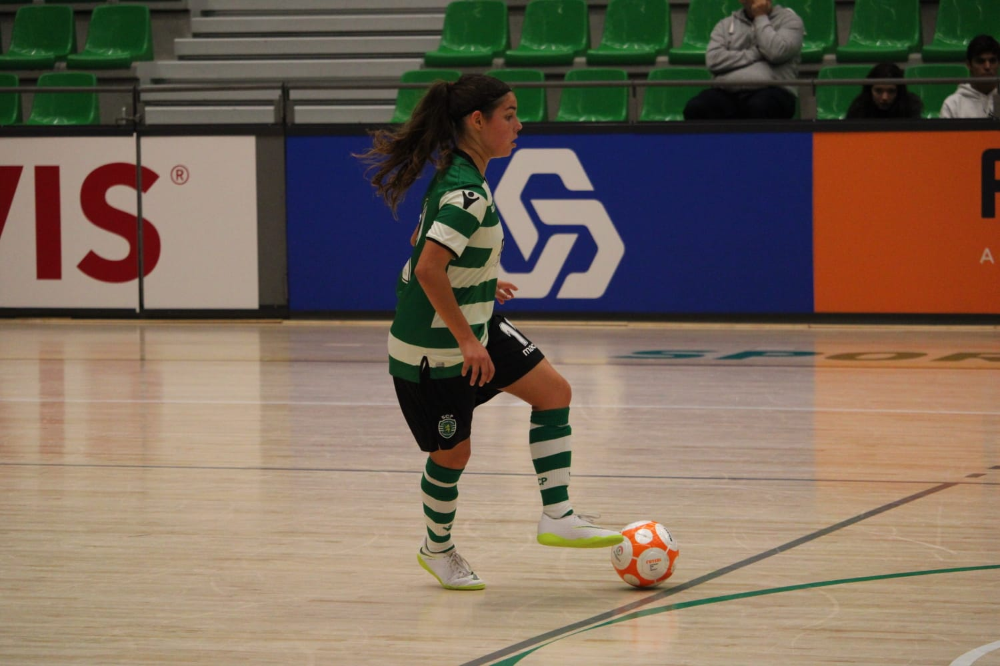

Percurso Desportivo
O meu percurso desportivo é essencialmente marcado pelo futsal. Comecei ao jogar com seis anos, inicialmente sem competição. Com cerca de doze anos tornei-me atleta federada e só deixei de jogar no ano de 2023 quando iniciei o mestrado na faculdade.
Iniciei o meu percurso na Zambujeira e Serra do Calvo, um clube perto da minha terra. Depois passei pelo Sporting Clube de Portugal. Fui chamada a dois estágios da Seleção Nacional sub-17 e foi uma experiência incrível. Experimentei o futebol no Sport Clube União Torreense e gostei da experiência, no entanto, decidi voltar ao futsal. Terminei a minha carreira no A.C.D.R.Arneiros e cá no fundo, espero voltar a jogar um dia como atleta federada.


